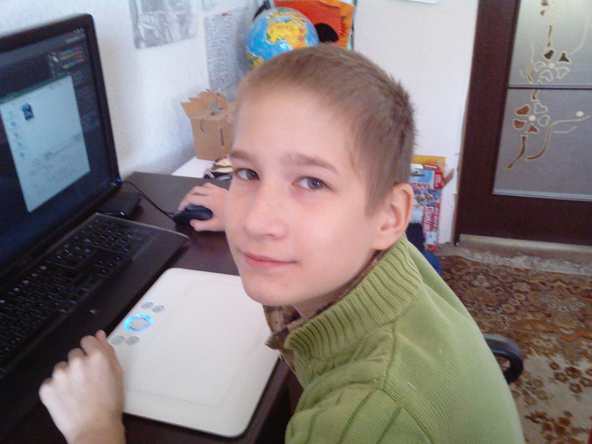
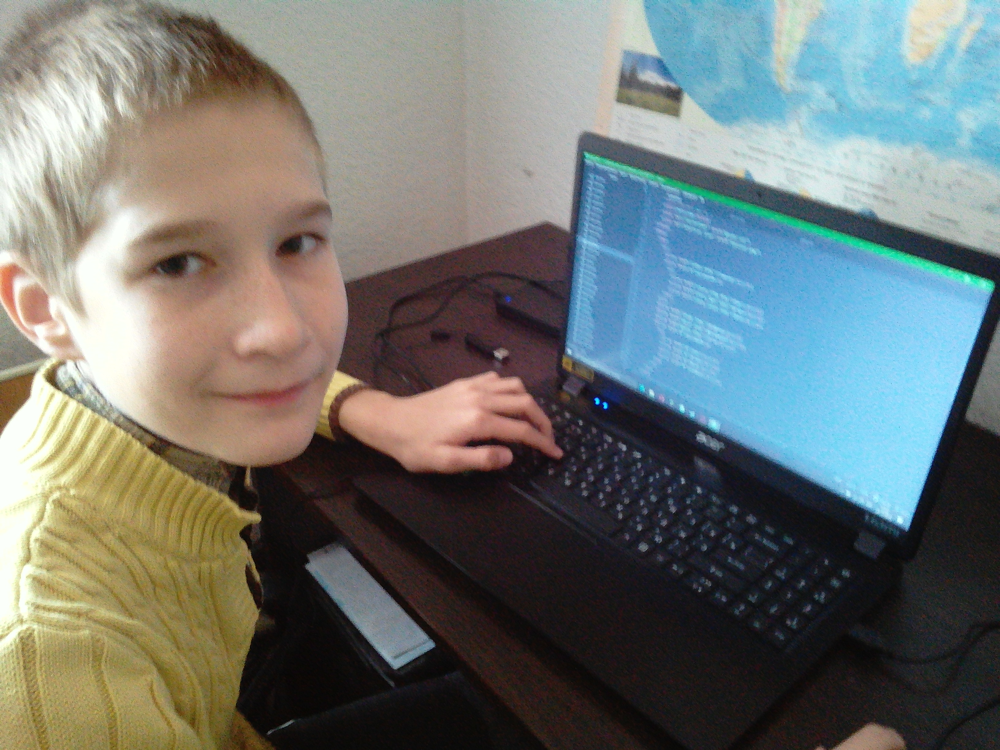
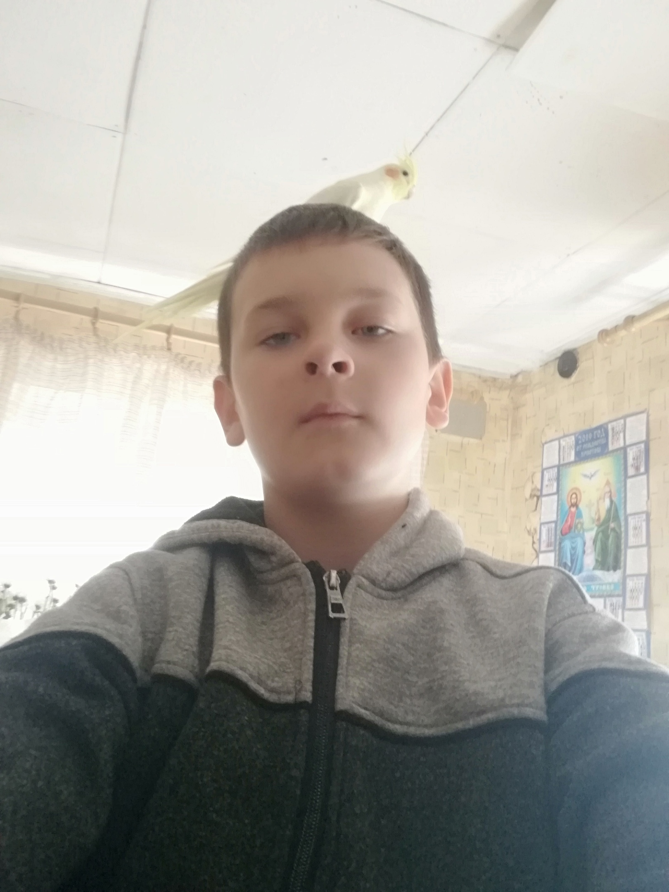

ХЕЛЛОУИН! Какой же прекрасный и одновременно ужасный(В хорошем смысле слова) праздник! Но для него нужны и хорошые люди, знающие как правильно себя вести в этот праздник, что бы не сломать его.
 Первый гость - Игорь! Это мой братик, он заведует всем и вся! Он по сути зделал вообще всё!
 Это я! Для праздника я сделал этот сайт и просто помогал во всём! Но к сожалению - я не умею улыбаться.
 Верный, но бешеный друг! Он помогал в создании одного из самого важного - декорации! Вот ссылка на эту страницу - Декорации.
Это мой Папа! Он занимался самым трудным и одновременно важным! Он покупал тыквы и помогал вырезать!
Премия "Самый Активный и Весёлый участник праздника" достаётся... Насте!!!
Вот и все, кого мы хотим видеть на празднике! Конечно есть бабушки и дедушки, но они или не смогут приехать, или им не нравится праздник.